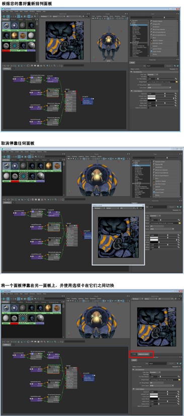
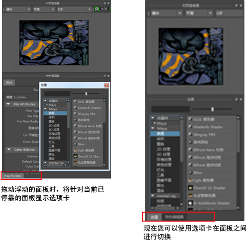

通过停靠、取消停靠和重新排列面板，创建最适合您工作流的 Hypershade 布局。
可以停靠和取消停靠“浏览器”(Browser)、“材质查看器”(Material Viewer)、“特性编辑器”(Property Editor)、“创建”(Create)和“存储箱”(Bins)面板中的任何一个。在打开 Hypershade 时，默认情况下将显示这些面板。
可以取消停靠面板以便它们变为独立窗口；或者先取消停靠它们再重新停靠到 Hypershade 窗口中的其他位置。
此外，可以从“窗口”(Window)菜单打开其中的任何面板（“视口”(Viewport)、“渲染视图”(Render View)、“大纲视图”(Outliner)、“UV 编辑器”(UV Editor)、“曲线图编辑器”(Graph Editor)和“属性总表”(Attribute Spread Sheet)），并将该面板停靠到 Hypershade。
可以将一个面板停靠到另一个面板上，系统会创建选项卡，以便可以在 Hypershade 的同一区域中的面板之间切换。
停靠和布局首选项与您的首选项一起保存；即启动新场景时和重新启动 Maya 时，它们保持不变。

| 目标 | 操作 |
|---|---|
| 取消停靠面板 | 将面板的双点边 () 拖离其当前位置。 |
| 重新停靠面板 | 将面板拖动到 Hypershade 中希望它停靠的位置。 |
| 重新打开已关闭的独立浮动窗口 | 从“窗口”(Window)菜单中选择适当的选项，例如，“窗口 > 浏览器”(Window > Browser)。 |
| 将面板停靠到另一个面板中 |
将浮动的（或取消停靠的）面板拖动到当前已停靠的面板中。拖动时，将为当前已停靠的面板显示一个选项卡，并且在浮动面板也停靠时将为它创建第二个选项卡。 
|
| 获取多个浮动特性编辑器 | 通过单击特性编辑器上的  ，可以在单独的浮动窗口中获取特性编辑器。这样，可以获取多个浮动特性编辑器窗口。 ，可以在单独的浮动窗口中获取特性编辑器。这样，可以获取多个浮动特性编辑器窗口。
|
| 将其他面板（如“渲染视图”(Render View)）添加到布局。 |
选择“窗口 > 渲染视图”(Window > Render View)以打开“渲染视图”(Render View)面板，然后将它停靠到 Hypershade 中。 |